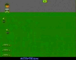

|

Review

Game Type: 2D Arcade
You use the paddle to control a set of buckets at the bottom of the screen. An
escaped prisoner races back and forth at the top, dropping bombs. Your
goal is to catch the bombs before they reach the ground. Miss one and you
lose a bucket, making the bombs more difficult to catch. Run out of buckets
and the game ends.
Gameplay: 90/100
In the higher stages, most peoples' reaction is: "You have GOT to be
kidding." Those bombs can get going mighty fast. Eventually it becomes
not a matter of catching the bombs one by one but of tracing the path they
form across the screen. It takes steady hands, eyes, and nerves to get
anywhere, though I've been known to improve my score when I'm overwhelmed
simply by shaking the paddle wildly.
Graphics: 70/100
There's not a whole lot to see during the game, just your buckets,
the bombs, and the convict. The color scheme for the background doesn't
work too well but it's bearable. The graphic resolution is pretty good.
Sound: 70/100
The ever rising pitch of the bombs hitting the buckets does a great job
of adding to the tension. Aside from that only the hiss of the fuses and the
occasional explosion can be heard.
Overall: 90/100
The ultimate fix for adrenaline addicts, definitely not for the faint of
heart. Kaboom has never been duplicated on any other console system,
and I've never seen a satisfactory clone for PCs (but I believe Kaboom
itself is available as part of a package of 2600 classics for Windows).
Highly recommended to those looking for a rush.
|